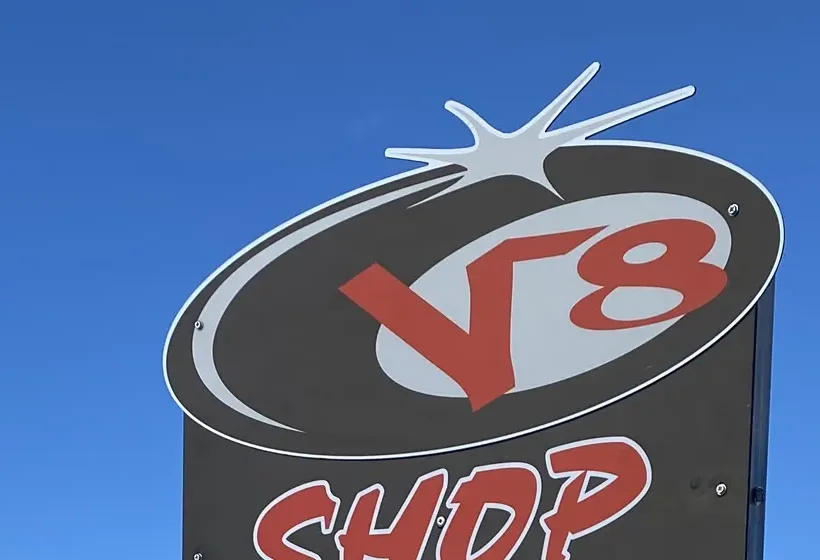

Contrôle avant sortie
Vérifier les fixations, les chaussures et l’état général avant de rejoindre les pistes.

Appeler ↗Un matériel bien réglé change la journée. L’atelier accompagne la location et l’équipement avec les contrôles adaptés à la pratique.

Le magasin communique une offre d’entretien, de réglage et d’accessoires autour du ski et du snowboard. Les interventions et délais se valident avec l’équipe selon le matériel et l’affluence.
Vérifier les fixations, les chaussures et l’état général avant de rejoindre les pistes.
Adapter le matériel au niveau et à la pratique annoncée par le pratiquant.
Demander les opérations possibles, le délai et le tarif avant dépôt.
Casques, équipements et éléments techniques visibles dans le pro shop.


Les prestations exactes sur matériel personnel doivent être confirmées par téléphone avant déplacement.
Le délai dépend de l’opération et de la fréquentation. L’équipe indique le créneau au moment de la prise en charge.
Oui, l’intérieur photographié montre un espace pro shop avec vêtements, casques et accessoires. Les marques et stocks évoluent.